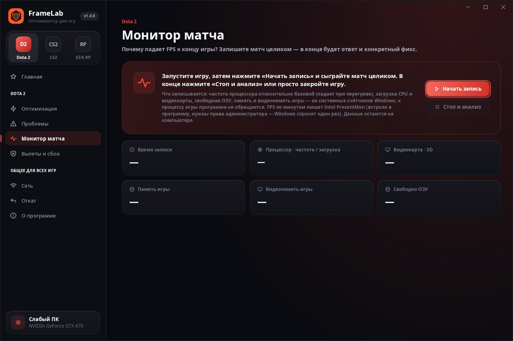

Как поднять FPS в Dota 2 и убрать фризы
В Dota 2 чаще всего жалуются на три вещи: FPS падает к концу матча, всё фризит после обновления, и регулярно проскакивают микрофризы. У каждой — свои причины, и консольной «волшебной команды» ни от одной из них нет.
FPS падает к концу матча
Обычно это не «игра тормозит со временем», а одно из четырёх: нагрев и троттлинг (особенно на ноутбуках), заканчивается видеопамять или ОЗУ, растёт потребление памяти самой игрой, или игра деградирует от матча к матчу без перезапуска. В поздних драках к этому добавляется много юнитов и эффектов — это нагрузка на процессор.
- Ограничьте FPS через
+fps_maxпод частоту монитора: меньше нагрев — нет троттлинга к 40-й минуте. На ноутбуке играйте от сети. - Перезапускайте Dota 2 каждые 2–3 матча: независимое расследование показало, что игра работает хуже с каждой следующей игрой без перезапуска.
- Если заполняется видеопамять — снизьте качество текстур; если ОЗУ — закройте браузер и включите автоматический файл подкачки.

Фризы после обновления игры или драйвера
После обновления шейдеры компилируются заново, и кеш драйвера и Steam устаревает. Особенно заметно на Vulkan в первых матчах.
- Очистите кеш шейдеров и сыграйте 1–2 матча или демо героя — кеш соберётся заново.
- В Steam включите предварительное кеширование шейдеров и обработку шейдеров Vulkan в фоне.
- На HDD фризы при первом появлении героев и способностей сильнее — перенос игры на SSD помогает больше любых настроек.
Регулярные микрофризы
- Закройте фоновые программы: RGB-софт, запись Game Bar, оверлеи (Discord, MSI Afterburner/RTSS), синхронизацию облака.
- Выключите фоновую запись Xbox Game Bar и включите план питания «Высокая производительность».
- Играете в «окне без рамки» на Windows 11 24H2? Попробуйте переключить «Оптимизацию для оконных игр» или перейти в полноэкранный режим — эффект зависит от системы.
Устаревшие параметры запуска
Многие советы в интернете — из времён старого Source. В Source 2 эти параметры ничего не делают:
-threads 8 -prewarm -dxlevel 95 -dx9
Рабочие — +fps_max и при необходимости -dx11. FrameLab находит устаревшие параметры и предлагает убрать, ваши собственные не трогает.
Что ещё проверить
- Драйвер видеокарты старше года — обновите с сайта NVIDIA, AMD или Intel.
- Ноутбук с двумя видеокартами — Dota 2 должна идти на дискретной.
- Одна планка памяти на встроенной графике — второй такой же модуль (двухканальный режим) по тестам обычно даёт прирост в десятки процентов FPS.
- NVIDIA Reflex — в Dota 2 он включается в Настройки → Видео (GTX 900 и новее).
Частые вопросы
Почему FPS в Dota 2 падает к концу матча?
Чаще всего это нагрев и троттлинг (особенно ноутбуки), нехватка видеопамяти или ОЗУ, рост потребления памяти самой игрой или деградация от матча к матчу без перезапуска. В поздних драках к этому добавляется нагрузка на процессор от юнитов и эффектов.
Работают ли -threads и -prewarm в Dota 2?
Нет, это параметры старого Source. В Source 2 они ничего не дают, как и -dxlevel 95 и -dx9.
Откуда фризы после обновления игры или драйвера?
Шейдеры компилируются заново. Очистите кеш шейдеров и сыграйте 1–2 матча или демо героя — кеш соберётся, фризы пропадут.
Найдите, что съедает FPS, в FrameLab
Бесплатно, оффлайн, безопасно для VAC. Каждое изменение можно отменить кнопкой «Отменить» или на вкладке «Откат».